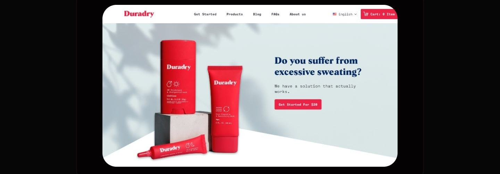
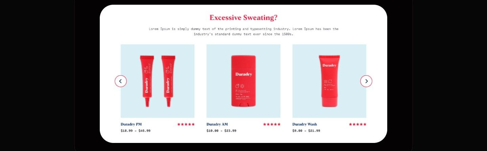
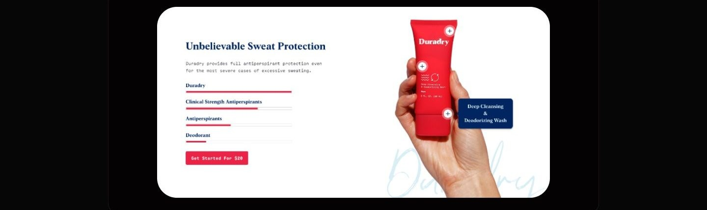
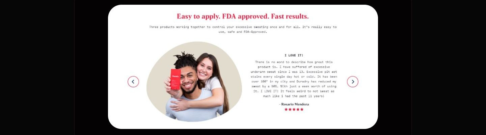

Case study 09 of 11 · DTC e-commerce · Independent concept project
Duradry
Selling a three step treatment routine to people burned by products that promised dryness and delivered irritation.
2 min read

Buyers arrive skeptical after failed products, so the page has to earn clinical trust before it can ask for a subscription.
How every section converts a trust objection, irritation, complexity, lock-in, into a concrete answer before the CTA repeats.
The customer has already been disappointed
People with hyperhidrosis are not browsing for a deodorant, they are hunting for a treatment they can finally believe in. Duradry is a three product system for excessive sweating, sold one time or by subscription. The store has to explain a nightly and morning routine, back its clinical claims, and remove subscription anxiety, all inside one scrolling page.
- Repeated product failures leave shoppers assuming the next promise of dryness is also empty.
- Strong formulas are associated with stinging and irritation, so safety needs as much airtime as strength.
- Rigid subscriptions make people feel locked in before they have even seen results.
Desk research covered three U.S. competitors, Certain Dri, SweatBlock, and Carpe, mapping their positioning, FDA status, and the complaints in their reviews.
One page that answers objections in order
The homepage walks a skeptical buyer from the problem, to the routine, to the evidence, repeating one twenty dollar entry offer throughout.






What testing could and could not tell me
The task scenarios could check whether the page's information scent holds up, whether people can find products, usage, and shipping answers, but not whether skeptical buyers would actually convert or stay subscribed.
As a concept project, testing was moderated task walkthroughs, not longitudinal use.
Appendix: foundations and system
The system underneath the page: a red-forward component library and a twelve column desktop grid that keep a long single page feeling like one product.